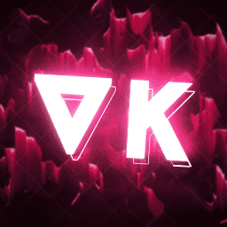

Bienvenidos a ONAC
Organización de NauticMC para la Ayuda y el Crecimiento
Sobre Nosotros
ONAC es una organización dedicada a promover la igualdad y el crecimiento colectivo entre los clanes de NauticMC. Nuestra misión es proporcionar apoyo y recursos para ayudar a todos los clanes a desarrollarse y prosperar.
- Promovemos la igualdad de oportunidades
- Facilitamos el crecimiento colectivo
- Proporcionamos recursos y apoyo
- Fomentamos la colaboración
Nuestro Fundador

VKTEAM
Fundador de ONAC
ONAC fue fundada por VKTEAM, un líder visionario en la comunidad de NauticMC. Su dedicación y pasión por crear una comunidad más unida y equitativa ha sido la fuerza impulsora detrás de ONAC.